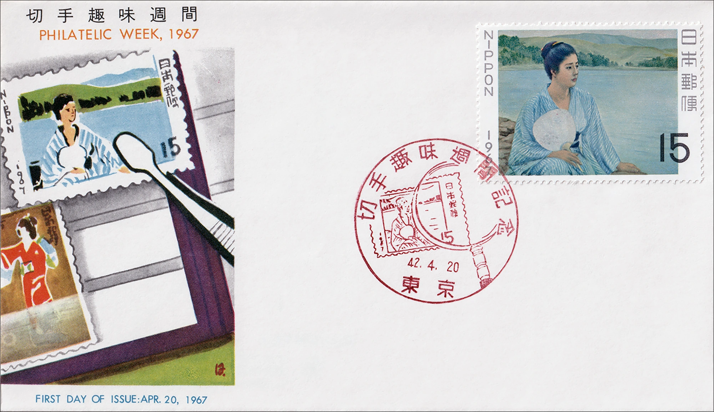
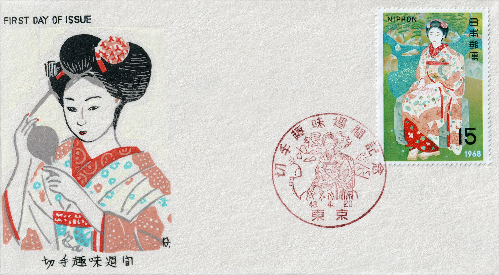
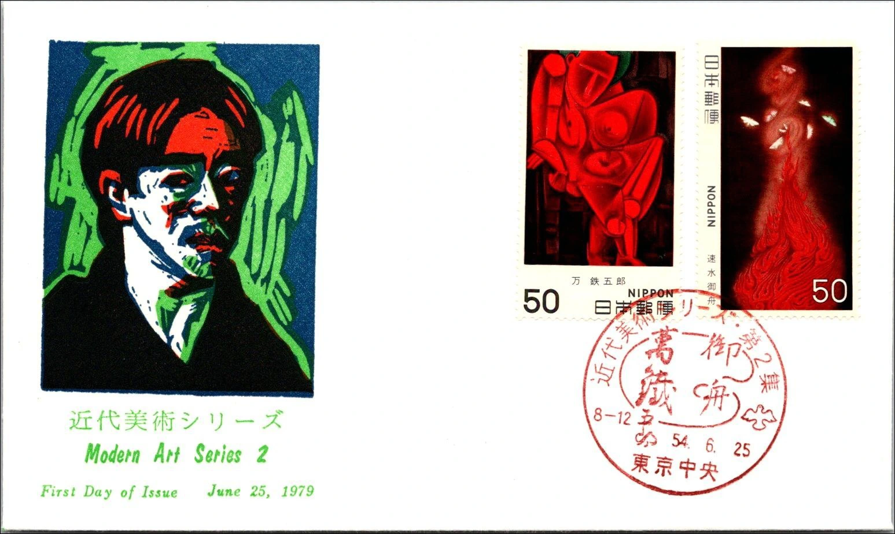
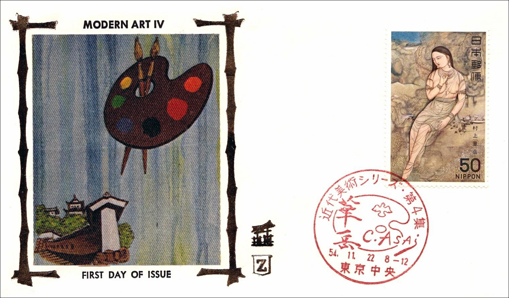
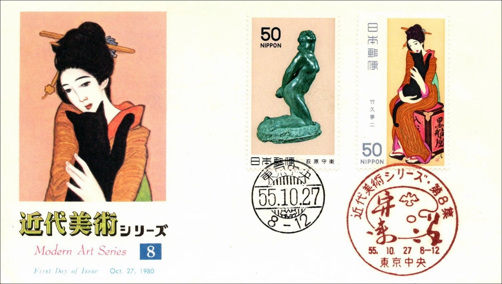
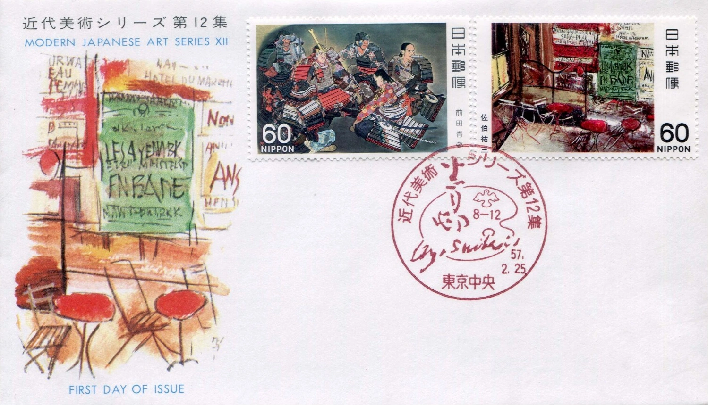
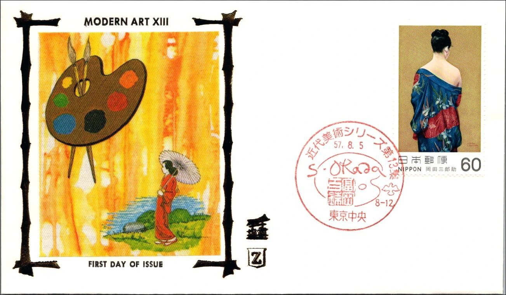
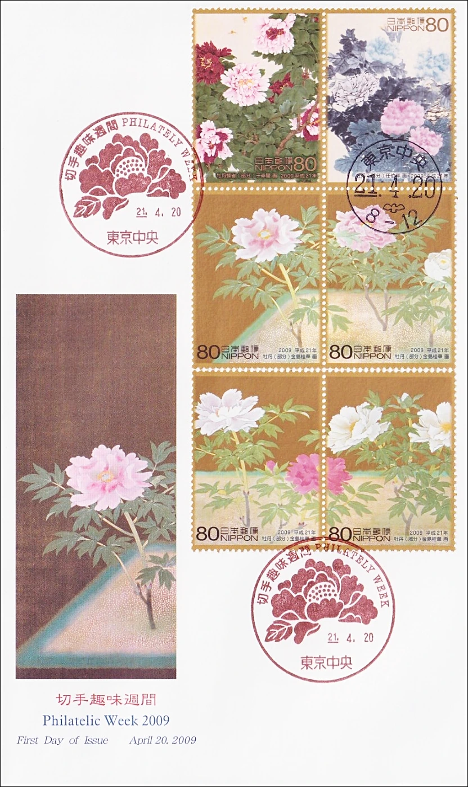

Japanese Art on First-Day Covers – 1967–2009
Eight illustrated covers tracing the dialogue between Japanese tradition and modern art.
Philatelic Week and the Modern Japanese Art series brought paintings and sculpture to a wide audience. The latter ran from May 1979 to March 1983, with sixteen pairs of stamps. A first-day cover combines postage, a dated cancellation and often an illustrated cachet, which is distinct from the artwork on the stamp. Japanese dates on these covers use the Shōwa era: adding 1925 to the era year gives the Western year.
Click any cover to examine its details at full resolution.
1967 — Kuroda Seiki: Lakeside
20 April 1967 · 15 yen · C474
Kuroda Seiki (1866–1924) studied painting in France and became a major advocate of Western-style oil painting (yōga) in Japan. Lakeside (1897), painted at Lake Ashi, shows his future wife Kaneko Tane wearing a cotton yukata and holding a round uchiwa fan. The quiet blue palette and outdoor light illustrate his interest in plein-air painting.

The red Tokyo cancellation bears the date 42.4.20 (Shōwa 42). The cachet depicts a stamp album and collecting tools. According to the supplied notes, Hasebe Hideo designed both stamp and cachet; photogravure, 33 million stamps issued.
1968 — Tsuchida Bakusen: Maiko in a Garden
20 April 1968 · 15 yen · C509
Tsuchida Bakusen (1887–1936) was a Kyoto-based painter who renewed nihonga, combining Japanese materials and pictorial conventions with an interest in European art. His 1924 painting Maiko in a Garden, on silk, depicts an apprentice geisha in a traditional garden. The composition balances decorative pattern and carefully observed human form.

The illustrated cachet focuses on the maiko and her mirror; the Tokyo first-day cancellation reads 43.4.20. The supplied notes identify Hasebe Hideo as designer of stamp and cachet, photogravure printing and a quantity of 30 million. The painting is held by the National Museum of Modern Art, Tokyo.
1979 — Modern Japanese Art II
25 June 1979 · two 50-yen stamps
The cover juxtaposes two intense red compositions with an expressive portrait in its cachet. Their saturated colours and bold outlines mark a striking departure from the restrained palette of Lakeside. The individual paintings and artists on this cover require further catalogue confirmation.

The JPS cachet is identified in the supplied notes. The special red Tokyo Central cancellation dates from Shōwa 54. The British Library catalogue confirms the issue date and credits Y. Kikuchi with stamp design.
1979 — Modern Japanese Art IV: Asai Chū — Nude
22 November 1979 · 50 yen
Asai Chū (1856–1907) was among the pioneers of Western-style painting in Japan. He studied under Antonio Fontanesi and later travelled to France, where he encountered European painting and decorative arts. His work helped establish oil painting as a major part of modern Japanese art. The stamp shows a seated woman against a textured rocky setting.

The palette-and-brush cachet is complemented by a red Tokyo Central cancellation incorporating the name C. Asai. This cover bears one stamp from the issue. The painting is titled Nude.
1980 — Morie Ogiwara and Yumeji Takehisa
27 October 1980 · two 50-yen stamps · Series VIII
Morie Ogiwara (1884–1910), also known as Rokuzan, studied in Europe and was influenced by Auguste Rodin. His sculpture Woman explores the expressive possibilities of the human figure. Yumeji Takehisa (1884–1934) was a painter, illustrator and designer whose slender, melancholic female figures became emblematic of Taishō-era popular culture. Kurofuneya (Black Ship House) depicts a woman holding a black cat.

The NCC cachet enlarges Takehisa’s composition. Both a black dated cancellation and a red pictorial cancellation appear on the cover, with Tokyo Central identified on the latter.
1982 — Seison Maeda and Yūzō Saeki
25 February 1982 · two 60-yen stamps · Series XII
Seison Maeda (1885–1977) was a leading nihonga painter, renowned for historical subjects and carefully rendered figures. The left stamp shows an animated group of warriors. Yūzō Saeki (1898–1928) studied Western-style painting and worked in Paris, where street façades, lettering and cafés became characteristic subjects. His energetic brushwork captures the visual texture of the modern city.

The cachet echoes the café scene on the right stamp, including its signage and red seats. The Tokyo Central pictorial cancellation incorporates Saeki’s name. The supplied filename suggests 1980, but the cover clearly reads Shōwa 57.2.25, corresponding to 1982.
1982 — Saburosuke Okada: Iris Robe
5 August 1982 · 60 yen · Series XIII
Saburosuke Okada (1869–1939) studied in France and became a prominent teacher of Western-style painting in Japan. The stamp reproduces Ayame no Koromo (Iris Robe), a portrait seen from behind, where the richly patterned blue garment contrasts with a neutral background. The work reveals the dialogue between Western oil painting and Japanese textile aesthetics.

The Z-marked cachet uses a palette, brushes and a figure carrying a parasol. The red Tokyo Central cancellation incorporates Okada’s name and the date 57.8.5. Only one of the two designs issued that day is present.
2009 — Peonies: Japanese and Chinese painting
20 April 2009 · six 80-yen stamps · C2053a–f
The issue commemorated the China 2009 World Philatelic Exhibition in Luoyang, a city famous for peonies. Yu Fei’an (1889–1959) revived meticulous Chinese bird-and-flower painting; Ren Bonian (1840–1896), a major Shanghai School artist, brought lively brushwork to traditional subjects. Kanashima Keika (1892–1974), a Japanese nihonga painter, contributed four designs drawn from his peony paintings. Together these works demonstrate different approaches to a shared East Asian floral motif.

The vertical cover carries all six designs, arranged in a block of two columns and three rows, with two red floral cancellations and a peony cachet. The Japan Philatelic Society lists six-colour photogravure, stamp dimensions of 33 × 45 mm, and designers Wang Yun Feng (first two) and Kanematsu Fumiaki (remaining four).
Further reading
Japan Art Series · Japan Philatelic Week
Sources and notes
Philatelic specifications for 1967 and 1968: collection documentation. Other issue details: inscriptions on the covers and the following references. Artist biographies provide general art-historical context; unidentified works are not assigned speculative titles.
Japan Philatelic Society: Philatelic Week 2009 · Japanese Stamps Digital Museum · International Society for Japanese Philately: index · British Library: Universal Postal Union Collection
Published November 27, 2026 · Victor Manta, USA.